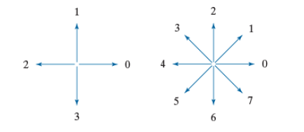

Image Processing and Analysis
Morphologic operations
Chain Codes
Chain codes is a way of representing the boundary of an object. The directions is represented according to the following two images (depending on if we are looking on 4-connectivity or 8-connectivity)
Since chain code is dependent of the starting position this makes it harder to compare the chain code but we solve this by normalization. To normalize, we consider the chain code to be circular and chooses the sequence that gives the smallest integer (rotation of the code).
Example normalization
Chain code: 202100206565444Normalized chain code: 002065654442921
To further being able to compare the chain code and see if objects are the same, we want to make the chain code independent of the rotation of the object. To do this, we look at the first difference of the chain code. The first difference is the number of directions that separate two adjacent elements of the code.
Example first difference, 8-chain
Given a 8-chain code: 202100206565444. The first difference is calculated by taking two numbers at a time and counting the number of positions required to reach the second number from the first number, in the counter clockwise direction.Take the first 2 numbers, to get to 0 from 2, we take 6 steps (2-3-4-5-6-7-0). Next we have 0 to 2, that is 2 steps (0-1-2). Continuing this process gives us the first difference of the chain code:
Chain code: 202100206565444
First difference: 62770266717700
Normalized: 02667177006277
Example first difference, 4-chain
Given a 4-chain code: 03032211.Take the first 2 numbers, to get to 3 from 0, we take 3 steps (0-1-2-3). Next we have 3 to 0, that is 1 step (3-0). Continuing this process gives us the first difference of the chain code:
Chain code: 03032211
First difference: 3133030
Normalized: 0303133